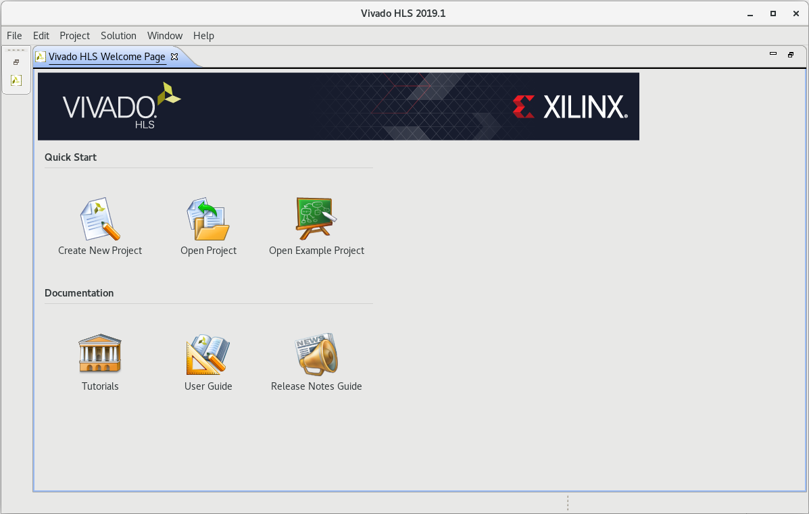
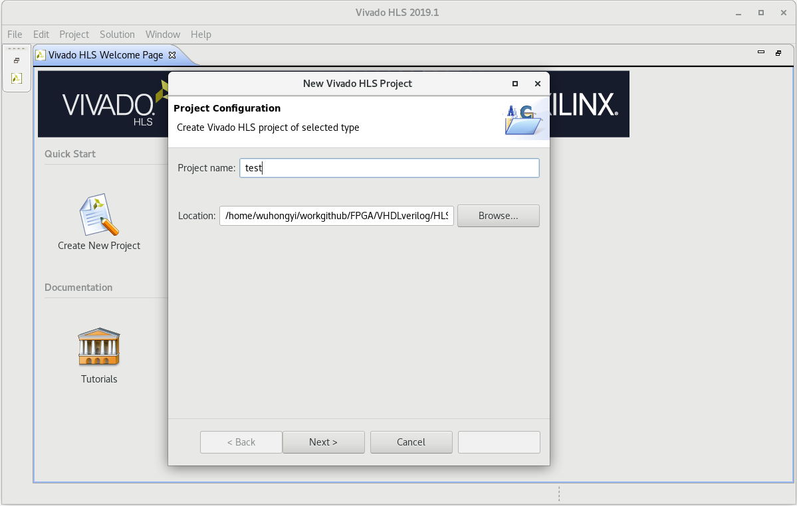
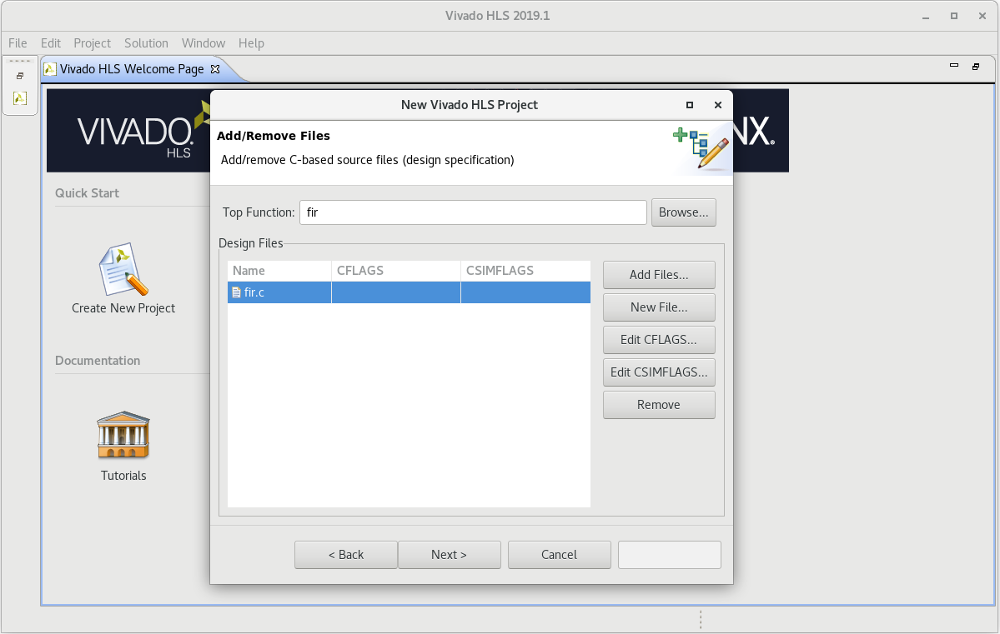
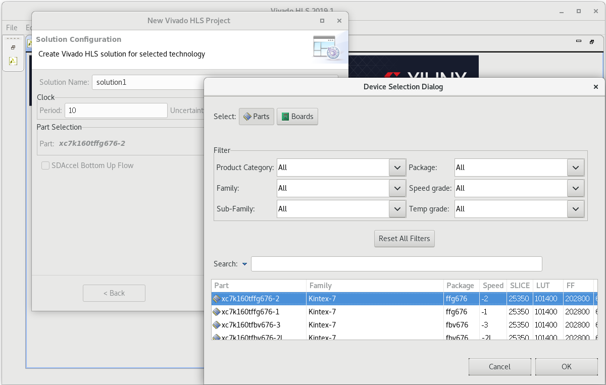
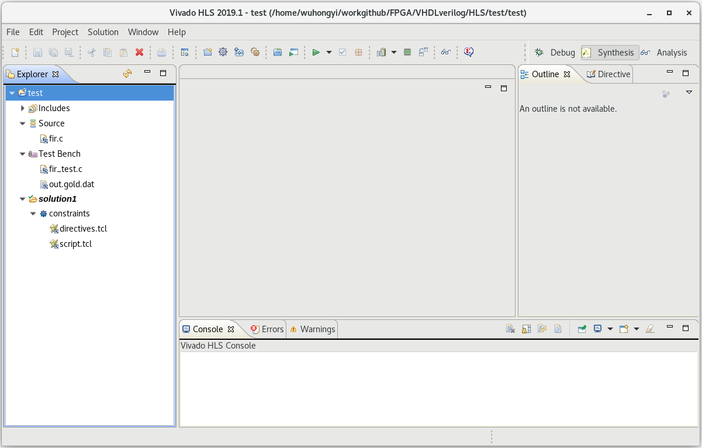
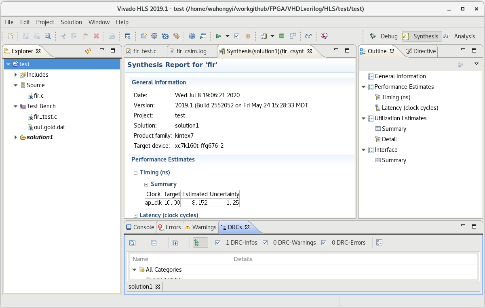

高层次综合¶
利用 FPGA 进行算法实现已经被广泛认知,但对于很多没有 FPGA 和 HDL 设计经验的开发者而言,往往又觉得开发门槛较高,因此全球相关的科研和工程人员都在致力于如何将 FPGA 技术介绍给更多的开发者,使更多人从 FPGA 的并行性、高性能、低功耗、灵活配置中获益。其中,Vivado HLS(高层次综合)就是一个成功的代表。通过 Vivado HLS 工具中,开发者可利用 C/C++ 语言对 FPGA 进行编程,这项技术已经趋于成熟,在实验核物理中也已广泛采用。
根据 Vivado HLS 的使用指南,我们将对我们的输入程序作出以下规范:
不使用动态内存分配(不使用malloc(),free(),new和delete())
减少使用指针对指针的操作
不使用系统调用(例如abort(),exit(),printf()),我们可以在其它代码例如测试平台上使用这些指令,但是综合的时候这些指令会被无视(或直接删掉)
减少使用其它标准库里的内容(支持math.h里常用的内容,但还是有一些不兼容)
减少使用C++中的函数指针和虚拟函数
不使用递归方程
精准的表达我们的交互接口
创建一个高级合成项目¶
打开 Vivado HLS 图形用户界面(GUI)，在欢迎页面中,选择创建新项目以打开项目向导。
输入项目名称；单击 Browse 导航到目录的位置；选择目录并单击 OK；单击 Next。
输入以下信息来指定 C 设计文件: 点击添加文件；选择（fir.c）并单击 OK；使用 Browse 按钮指定顶级函数（fir.c）功能；单击 Next。
在这个项目里只有一个 C 设计文件。 当有多个 C 文件要合成时，您必须在此阶段将它们全部添加到项目中。存在于本地目录中的任何头文件都会自动包含在项目中。
单击 Add Files 按钮来包含测试工作台文件（ fir_test.c）和 out.gold.dat。单击 Next。
测试工作台和测试工作台使用的所有文件(头文件除外)必须包括在内。如果您没有包含测试工作台使用的所有文件（例如，由测试工作台读取的数据文件）,可能会因为无法找到数据文件而失败。

解决方案配置窗口指定第一个解决方案的技术规范。一个项目可以有多个解决方案，每个解决方案使用不同的目标技术、包、约束和/或综合指令。
接受默认的解决方案名称(solution1)、时钟周期(10ns)和时钟不确定性(默认为12.5%的时钟周期,留空/未定义)。单击器件选择按钮,打开器件选择窗口。从可用设备列表中选择设备。单击 OK。
单击 Finish 打开 Vivado HLS 项目
HLS 项目的第一步是确认 C 代码是正确的。这个过程称为 C 验证或 C 仿真。在这个项目中,测试台将函数的输出数据与已知的好值进行比较。
高级合成步骤中,您将 C 设计合成为 RTL 设计,并查看合成报告。单击运行 C 合成工具栏按钮。合成完成后,报告文件将自动打开。
综合创建的端口¶
输入的原始程序如下：
void fir (data_t *y, coef_t c[N], data_t x)
{
static data_t shift_reg[N];
acc_t acc;
data_t data;
int i;
acc=0;
Shift_Accum_Loop:
for (i=N-1;i>=0;i--)
{
if (i==0)
{
shift_reg[0]=x;
data = x;
}
else
{
shift_reg[i]=shift_reg[i-1];
data = shift_reg[i];
}
acc+=data*c[i];;
}
*y=acc;
}
综合生成的 verilog 代码接口如下：
module fir (
ap_clk,
ap_rst,
ap_start,
ap_done,
ap_idle,
ap_ready,
y,
y_ap_vld,
c_address0,
c_ce0,
c_q0,
x
);
input ap_clk;
input ap_rst;
input ap_start;
output ap_done;
output ap_idle;
output ap_ready;
output [31:0] y;
output y_ap_vld;
output [3:0] c_address0;
output c_ce0;
input [31:0] c_q0;
input [31:0] x;
endmodule //fir
综合生成的 VHDL 代码接口如下：
entity fir is
port (
ap_clk : IN STD_LOGIC;
ap_rst : IN STD_LOGIC;
ap_start : IN STD_LOGIC;
ap_done : OUT STD_LOGIC;
ap_idle : OUT STD_LOGIC;
ap_ready : OUT STD_LOGIC;
y : OUT STD_LOGIC_VECTOR (31 downto 0);
y_ap_vld : OUT STD_LOGIC;
c_address0 : OUT STD_LOGIC_VECTOR (3 downto 0);
c_ce0 : OUT STD_LOGIC;
c_q0 : IN STD_LOGIC_VECTOR (31 downto 0);
x : IN STD_LOGIC_VECTOR (31 downto 0) );
end;
设计有一个时钟和复位端口(ap_clk, ap_reset)，这些都与设计本身的源对象相关联。
有与设计相关的额外端口。自动添加了一些块级控制端口: ap_start、ap_done、ap_idle 和 ap_ready。
变量 output y 现在是一个 32 位的数据端口，带有一个相关的输出有效信号指示器 y_ap_vld。
输入参数 c(一个数组)已经被实现为一个块 RAM 接口。具有 4 位输出地址端口、一个输出 CE 端口和一个 32 位输入数据端口。
标量输入参数 x 被实现为一个没有 I/O 协议(ap_none)的数据端口。
高级综合可以重用 C 测试平台,通过仿真验证 RTL。
单击 Run C/RTL CoSimulation 工具栏按钮
在 C/RTL 协同仿真对话框中单击 OK 以执行 RTL 仿真。RTL 联合仿真的默认选项是使用 Vivado 模拟器和 Verilog RTL 执行仿真。要使用不同的模拟器或语言执行验证,请使用 C/RTL 联合模拟对话框中的选项。
当 RTL 联合模拟完成时,报告将在信息窗格中自动打开。这是在 C 仿真结束时产生的相同消息。
C 测试平台为 RTL 设计生成输入向量。
对 RTL 设计进行了仿真。
将 RTL 的输出向量应用回 C 测试台中,测试台中的结果检查验证结果是否正确。
Vivado HLS 表明,如果测试工作台返回的值为 0,模拟就通过。它是测试台中返回变量的值,仅这一点就表示模拟是否成功。重要的是,测试工作台仅在结果正确时才返回值 0。
高级综合流程的最后一步是将设计打包为 IP 块,以便与 Vivado 设计套件中的其他工具一起使用。
单击 Export RTL 工具栏按钮
确保格式选择下拉菜单显示 IP 目录。
单击 OK。IP 打包程序为 Vivado IP 目录创建一个包。
在浏览器中扩展解决方案 1。
展开 Export RTL 命令创建的 impl 文件夹。
展开文件夹，找到打包成 zip 文件的 IP，准备添加到 Vivado IP 目录
Tcl Shell¶
我们知道用vivado的hls工具将C++代码实现成电路时，可以加”展开”啊、”流水线”啊、”内联”啊、”串联变并联”啊等等不同效果的directive(实现方式)。同一段代码能选择的directive很多，有时候我们不好直接判断一段代码选什么directive才会达到最好的效果，那就只能一个个directive地加，然后比较效果。
为了从繁琐的操作中将自己解放出来，我们可以用tcl来完成加directive的操作。
运行当前目录下的 tcl 脚本
vivado_hls -f proj.tcl
打开当前目录下的工程
vivado_hls -p projname
脚本示例：
open_project projname
set_top foo
add_files foo.cpp
add_files -tb main.cpp
set all_solution [list no_directive pipeline unroll unroll_2 unroll_4 unroll_5 unroll_10 ]
set all_directive [list no_directive pipeline unroll unroll_2 unroll_4 unroll_5 unroll_10 ]
foreach solution $all_solution directive $all_directive {
open_solution -reset $solution
set_part {xc7z020clg400-1}
create_clock -period 10 -name default
source "$directive.tcl"
csim_design
csynth_design
cosim_design
export_design -format ip_catalog
}
exit
里面用了 foreach 循环来把整个新建 solution 的流程套起来，在每个循环里面用 source 来调用同一个文件夹下事先写好的装 directive 的 tcl 文件。
浮点运算存在运算精度问题，统一个算法，放在不同的实现环境，结果会不同。
在C++代码中， hls有两个头文件
#include<cmath> //这个放在testbench中
#include<hls_math.h> //这个文件放在 要编译成STL代码的cpp文件中
这样可以保证在simulation的时候， hls_math中的数学函数返回的结果与STL后返回的精度一致。 否者，如果都用cmath，会导致C-simulation的时候结果一致，但在co-simulation 的时候结果不一致 。
https://china.xilinx.com/video/hardware/using-the-vivado-hls-tcl-interface.html https://blog.csdn.net/weixin_42683394/article/details/112312283
Vivado HLS数据类型及数据类型转换
https://www.xilinx.com/html_docs/xilinx2020_1/vitis_doc/gnq1597858079367.html